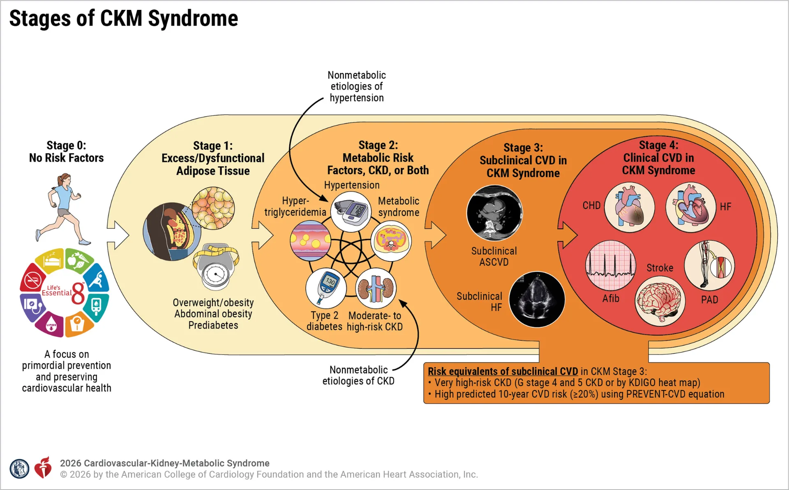

一、從心臟健康到心-腎-代謝健康（CKM health）：我們為什麼需要新的框架？
過去我們探討心血管疾病的預防時，常常會聯想到幾個名詞：高血壓、高血脂、心律不整、動脈硬化。這些根深蒂固的想法似乎將心血管疾病的預防侷限在心臟和血管本身的問題上。
事實上，人體的系統間是會互相聯動的。脂肪、血糖、血壓、血脂、腎臟與心臟之間，有著非常緊密的連結。腹部脂肪增加可能伴隨慢性發炎；血壓與血糖長期偏高會傷害血管與腎臟；腎臟功能下降又會反過來增加心臟負擔。這些變化累積起來，最後可能表現為心肌梗塞、中風、心衰竭或腎衰竭。
近年被提出的 CKM Health，也就是 cardiovascular-kidney-metabolic health，正是試圖用一個更整合的框架，理解心臟、腎臟與代謝健康之間的關係。它的重點不是創造一個令人焦慮的新病名，而是提醒我們：預防心血管疾病，不能只看見心臟本身，而要以更全人的角度看見整體風險如何形成。
二、CKM是什麼？心臟、腎臟、代謝彼此如何串連？
Cardiovascular（心血管）-kidney（腎臟）-metabolic（代謝） health最早在2023年就由Prof. Chiadi Ndumele等人在美國心臟學會（American Heart Association, AHA）提出，並有刊登相關的scientific statement和presidential advisory。隨著該概念推出後被更多的證據確認與探索，以及近年來相關藥物的發展迅速，其在2026年同樣由Prof. Ndumele領銜，協同四個美國最權威的專科學會：美國心臟學院（ACC）、美國心臟學會（AHA）、美國糖尿病學會（ADA）、美國腎臟科學會（ASN）共同掛名發表了CKM syndrome的專家指引（guideline），此乃一大里程碑，因為它代表了這個症候群應當被一個有系統化、有跨專科機構背書的形式被嚴肅處理。
雖然CKM這個名詞的正式提出最早追溯到2023年，但是科學界早已認知到這幾個系統之間並非獨立運作。2000年代文章就大量出現cardiometabolic（心代謝）一詞，2008時Dr. Claudio Ronco則提出cardiorenal syndrome（心腎症候群）一詞，從此可見一斑。
因此回到為何需要這樣的新框架？簡單來說，是因為過去我們常常用單一疾病來理解健康問題：血壓高，就看成高血壓；血糖高，就看成糖尿病；腎功能下降，就看成腎臟病；心肌梗塞或心衰竭發生時，才回頭說這是心臟病。
但 CKM Health 想提醒我們，這些問題常常不是各自獨立發生，而是彼此連在一起。肥胖、血糖異常、高血壓、血脂異常與腎功能變化，可能在多年之間逐步累積，最後才以心肌梗塞、中風、心衰竭、心房顫動或腎衰竭等形式表現出來。
因此，CKM 不是要把每個人都貼上一個新的疾病標籤，而是提供一種更整合的觀察方式：當我們看到血壓、血糖、血脂、腰圍或腎功能異常時，不只是處理某一個數字，而是思考這些變化是否代表一個更長期的心血管、腎臟與代謝風險軌跡。
三、為什麼腹部脂肪、血糖、血壓、腎功能會互相影響？
要理解 CKM Health，可以先從腹部脂肪開始。許多人以為脂肪只是身體儲存熱量的地方，但醫學上逐漸知道，脂肪組織其實就像一個活躍的內分泌器官。在腹部或內臟脂肪增加時，可能伴隨慢性發炎、胰島素阻抗與脂質代謝異常。這也是為什麼 CKM guideline 在評估肥胖相關風險時，不只看 BMI，也強調腰圍的重要性。
胰島素阻抗則是另一個關鍵。胰島素不只是控制血糖的荷爾蒙，也和脂肪、肝臟、肌肉與血管功能有關。當身體對胰島素的反應變差時，血糖可能逐漸上升，三酸甘油酯也可能增加，血管功能與發炎狀態也會受到影響。久而久之，這不只是糖尿病風險的問題，也會提高動脈硬化、心衰竭與腎臟病的風險。
腎臟也不只是負責排尿的器官。它參與血壓、體液、鹽分與血管內環境的調控。長期高血壓與高血糖會傷害腎臟微血管；腎功能下降後，身體調節水分與鹽分的能力變差，又可能讓血壓更難控制，進一步增加心臟負擔。這就是為什麼在 CKM Health 的框架中，腎功能與尿蛋白不只是腎臟科的數字，也和心血管風險密切相關。
所以，腹部脂肪、血糖、血壓與腎功能並不是四條互不相干的線，反倒像一張複雜的網絡。當一個地方出現問題，可能牽動其他地方；而多個問題同時存在時，心血管風險也會逐漸累積。CKM Health 的價值，就是幫助我們更早看見這張網，而不是等到重大心血管事件（如心肌梗塞、中風或心衰竭）發生後，才發現這些風險其實早已存在多年。
四、CKM staging 想告訴我們什麼？
在 CKM 的框架下，指引會將一個人的健康狀態分成五個階段。這裡不展開學理上的詳細定義，而是理解它背後的概念：CKM staging 不是為了貼上疾病標籤，而是希望看見心血管、腎臟與代謝風險可能如何被逐步累積。
- Stage 0：沒有明顯 CKM 風險因子。這個階段的重點是維持健康。
- Stage 1：體重或脂肪分布相關的風險，或血糖已經輕微升高但尚未達到糖尿病。這個階段提醒我們，風險可能已經開始形成，但仍然是很適合透過生活型態與體重管理介入的時機。
- Stage 2：出現較明確的心腎代謝風險，例如高血壓、三酸甘油脂偏高、代謝症候群、第二型糖尿病、慢性腎臟病。這時候重點應該轉向更有系統地控制血壓、血糖、血脂、體重與腎功能風險。
- Stage 3：已經出現亞臨床心血管疾病，或整體心血管風險已經很高。例如影像檢查發現亞臨床動脈粥狀硬化，或抽血、影像與風險評估顯示未來心衰竭或心血管事件風險偏高。
- Stage 4：已經發生臨床心血管疾病，例如冠心病、心衰竭、中風、周邊動脈疾病或心房顫動，並且同時伴隨代謝或腎臟相關風險。
因此，CKM staging 可以呈現一條健康風險軌跡。從脂肪、血糖輕微升高，到高血壓、糖尿病、慢性腎臟病，再到亞臨床心血管變化，最後可能進展為明顯的心血管疾病。越早看見這條軌跡，就越有機會在疾病真正發生前介入。
指引中也強調，健康生活型態與體重管理，是避免 CKM stage 往後進展的重要方式；在部分情況下，也可能讓風險狀態改善。這提醒了我們，預防心血管疾病，不應該等到心臟病已經發生才開始。
五、這個新框架對一般人有什麼意義？
CKM 框架並不是為了創造新的疾病標籤造成焦慮，而是提醒我們，心血管疾病常常是隨著時間逐漸形成的。在重大心腎事件真正發生以前，身體往往已經出現許多可以被看見、被理解，甚至有機會改善的節點。
腰圍、血脂、血糖、血壓、腎功能與尿蛋白，不只是健檢報告上一個個分開的數字，而是同一個長期健康風險中的不同面向。它們共同反映並影響一個人的心血管、腎臟與代謝健康。從這個角度來看，CKM Health 的價值不是讓我們更害怕疾病，而是幫助我們更早看見風險如何累積，並在還有機會改變的階段採取行動。
不過也需要提醒，CKM guideline 本質上是給臨床醫療人員使用的指引，並不適合讓一般人自行替自己分期，更不應該據此自行決定用藥或治療。尤其 GLP-1 類藥物、SGLT2 抑制劑、減重手術等治療，都需要由醫師依照個人的疾病狀態、整體風險、禁忌症、治療目標與醫療資源來評估。若有疑慮，應與醫師或醫療團隊討論。
六、結語
本文撰寫於2026 CKM guideline發表後的數日內，旨在將這個新的全人健康框架介紹給更多讀者。
實際上，心-腎-代謝健康也是我十分關注的研究領域之一。因此，當 CKM Health 逐漸從學術概念走向正式 guideline，我確實非常希望這個框架能被更多人理解，並在適合的情境下落實到臨床照護與日常健康管理之中。
後續我也會在 Blog 中撰寫較專業版的 CKM guideline 解析，進一步討論其中的分期、風險評估、治療策略與證據基礎。
本文的結語是：
從單一數字，看向全人健康。預防心血管疾病，要更早看見心腎代謝整體風險。